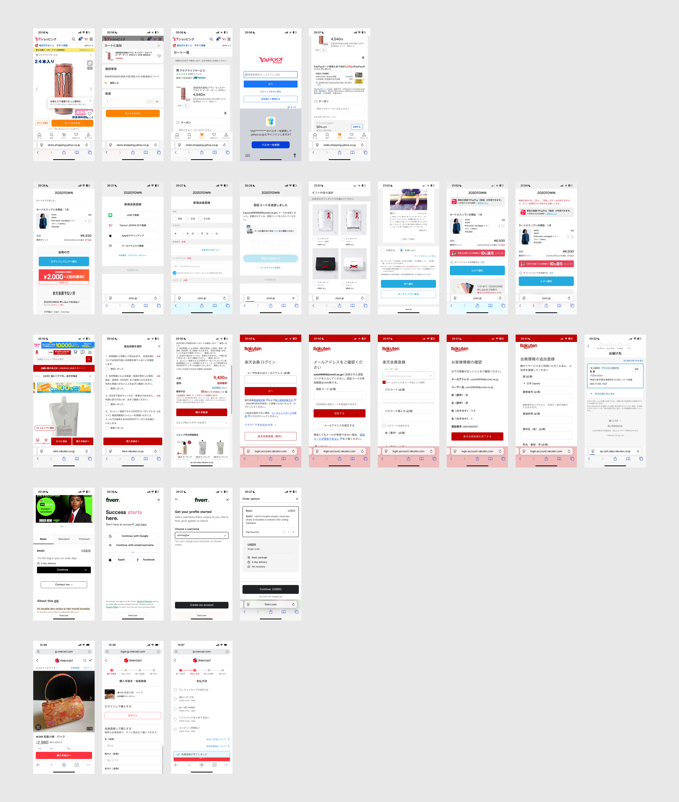
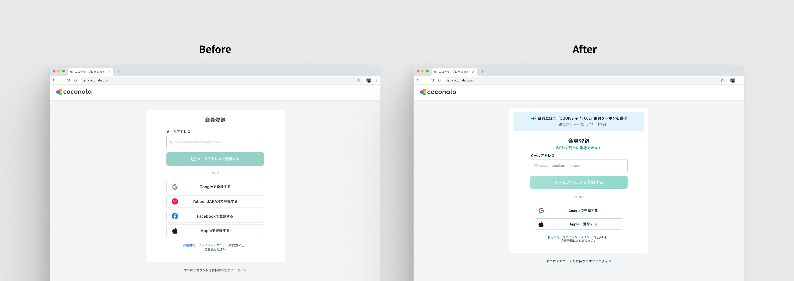
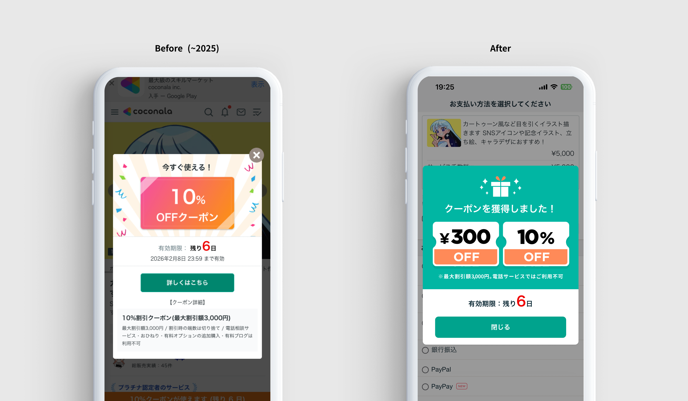

会員登録フローを短くして購入率 6%・会員登録 11% 増加PJ
Before （時間がかかる場合はこちらからご覧ください）
After （時間がかかる場合はこちらからご覧ください）
Overview
未ログインの購入フローで約23%がドロップ
- 未ログインユーザーが購入するには長い会員登録フローが必須。非会員の購入には会員登録が必須で、かなりの人数が購入ボタンを押してからのフローで離脱していた
企画担当のv1.0に、データ起点の追加施策を提案（v1.1）
- 登録フロー最小化のベース企画は企画担当が主導。デザイナーとして参加後、エンジニアが整備したログデータを自ら分析し、v1.1として2つの追加施策を提案・デザインした
会員登録完了率 11%向上・新規購入取引金額 6%向上（リリース前後比較）
- ①最初の画面で「60秒で登録完了・クーポンがもらえる」訴求を追加。②登録完了後に決済画面へ直接遷移。いずれもデータや競合他社のリサーチ結果を裏付けをもとに提案し、採用された
Summary
企画担当のベース施策にデータ起点の追加提案を重ね、購入率6%・登録完了率 11%の改善に貢献
😟 課題
長い登録フローが
購入の壁になっていた
- 非会員の購入には会員登録が必須で、かなりの人数が購入ボタンを押してからのフローで離脱していた
- ログデータが整備されておらず、具体的な離脱ポイントが不明
- フロー内の離脱よりも「登録するかどうか」の意思決定前で多くのユーザーが離脱
😊 貢献
データ分析から
追加施策を提案・実現
- エンジニアが整備したログデータを分析し、入口での離脱が主因であると特定
- 「60秒で登録できる・クーポンがもらえる」訴求を最初の画面に追加する施策を提案
- 決済画面への直接遷移を競合調査とデータをもとに提案・デザイン
🌱 結果・学び
最小の変更で
最大のインパクト
- 会員登録完了率 11%向上・新規購入取引金額 6%向上（リリース前後比較）
- 「デザインを足すより引く」ことで離脱が改善できるという確信を実体験として得た
Process
01
リサーチ
02
企画・要件定義
03
デザイン
Research
1. ログデータの分析
エンジニアが計測を整備したログデータをもとに自らデータ分析を実施。離脱は会員登録フロー内ではなく、「登録を開始するかどうか」の意思決定段階で多く発生していることが判明。v1.0のフロー最小化に加え、入口での離脱対策が必要と結論づけた。
購入意欲があるのに「登録しようか」の判断段階で多くが離脱。
登録完了後にサービス詳細に戻され、そのまま購入を断念。
仮説：①入口での訴求強化と、②登録後の決済画面への直遷移で購入完了率の大幅改善が見込める。
2. 競合他社の会員登録フロー調査
国内外の主要サービスの会員登録フローおよび購入完了後のリダイレクト先を調査。多くのサービスが購入フローに最適化した画面遷移を採用していることを確認。決済画面での離脱が多いという自社データと照らし合わせ、登録後の戻り先を決済画面に変更する施策を提案した。

Planning & Requirements
1. v1.1追加施策として2つの改善を提案
企画担当が主導したv1.0（フロー最小化）をベースに、データ分析と競合調査の結果から追加施策をv1.1として提案。購入ボタンを押すユーザーはすでに発注意向が高いため、「登録前の動機付け」と「登録後の購入継続」が次の改善ポイントと定義した。
■ 追加施策①：入口での訴求強化
最初の画面に「60秒で登録完了」「クーポンがもらえる」訴求を追加。登録を迷うユーザーの背中を押す設計に変更。
■ 追加施策②：決済画面への直接遷移
登録完了後の戻り先をサービストップではなく決済画面に変更。競合調査で多くのサービスが採用していることを確認し、決済画面での離脱が多いという自社データとあわせて提案した。また、既存のクーポンのリデザインも推進
Design
1. フォームのシンプル化とクーポン訴求の可視化
登録フォームを必須項目のみに絞り、入力ステップを最小化。クーポンのベネフィットをより目立つ位置に配置し、「登録する理由」を入口で明確に伝える設計とした。「いかにデザインしすぎないか」を指針に、不要なUIを徹底的に排除した。


2. プロトタイプ制作
関係者レビューおよびPOレビューに向けてFigmaプロトタイプを作成。フロー全体の体験を実際に触れる形で共有し、改善施策の意図をステークホルダーに伝えた。